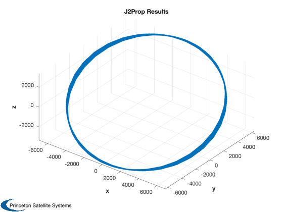
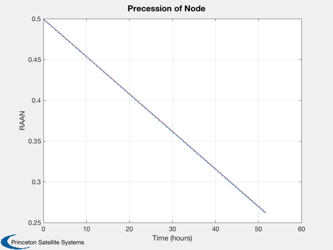
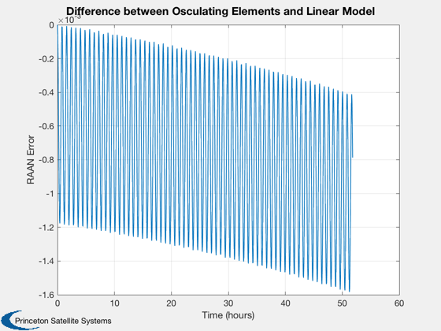

Demo of J2 Orbit Effects in Simulation
Generate an osculating orbit using J2 perturbation. Find the limits on accurate integration and compare to an analytic model.
Contents
See also
J2Prop, J2OrbitEffects, Date2JD, El2RV, RV2El
%-------------------------------------------------------------------------- % Copyright (c) 2019 Princeton Satellite Systems, Inc. % All rights reserved. %--------------------------------------------------------------------------
Orbit and epoch
el0 = [7000 0.5 0.5 0.2 1e-3 0.6];
jD0 = Date2JD;
[r,v] = El2RV( el0 );
dur = 32*Period(el0(1)); % about 2 days
Start with a good number of points
nPts = 1000; time = linspace(0,dur,nPts);
The gravity model
gM = LoadGravityModel( 'load file', 'GEMT1.geo', false ); % unnormalized
Propagate
disp('Propagate using J2Prop (FOrbCartH):') tic x = J2Prop( [r;v], jD0, time, gM ); toc rP = x(1:3,:); vP = x(4:6,:); Plot3D(x(1:3,:)); title('J2Prop Results')
Propagate using J2Prop (FOrbCartH): Elapsed time is 0.381965 seconds.
Compare to analytic
disp('Compare to analytic solution using J2OrbitEffects:') elFinal = RV2El(rP(:,end),vP(:,end)); [~, WDot] = J2OrbitEffects( el0(1), el0(5), el0(2), abs(gM.j(2)), gM.mu, gM.a ); err = (el0(3) + WDot*time(end)) - elFinal(3) els = RVSet2El( rP, vP, gM.mu ); [tP,tL] = TimeLabl( time ); Plot2D(tP,els(:,3)',tL,'RAAN','Precession of Node') hold on plot(tP,el0(3)+WDot*time,'r') Plot2D(tP,els(:,3)'-(el0(3)+WDot*time),tL,'RAAN Error',... 'Difference between Osculating Elements and Linear Model')
Compare to analytic solution using J2OrbitEffects: err = 0.00078836 
Try with less points
RK45 will produce an error if the integration tolerance can't be met - i.e. not enough points.
disp('Show that RK45 is sensitive to number of points:') nPts2 = 200; try time2 = linspace(0,dur,nPts2); x2 = J2Prop( [r;v], jD0, time2, gM ); catch exception disp('Whoops!') disp(exception.message) end
Show that RK45 is sensitive to number of points: Whoops! Exceeded the max error count of 10. Try reducing your stepsize and running again. h = 9.3725e+01, hMax = 9.3725e+02, error = 1.5134e-05, tau = 2.4625e-06
Try with more points
How does it compare to the analytic solution now? Perhaps "better" but 1000 points was certainly sufficient.
disp('Add points and try again:') nPts3 = 3000; time3 = linspace(0,dur,nPts3); tic x3 = J2Prop( [r;v], jD0, time3, gM ); toc elF3 = RV2El(x3(1:3,end),x3(4:6,end)); err3 = (el0(3) + WDot*time3(end)) - elF3(3); fprintf('Yes, just a little closer with %d points\n',nPts3) [err err3] %--------------------------------------
Add points and try again: Elapsed time is 0.638075 seconds. Yes, just a little closer with 3000 points ans = 0.00078836 0.00071956